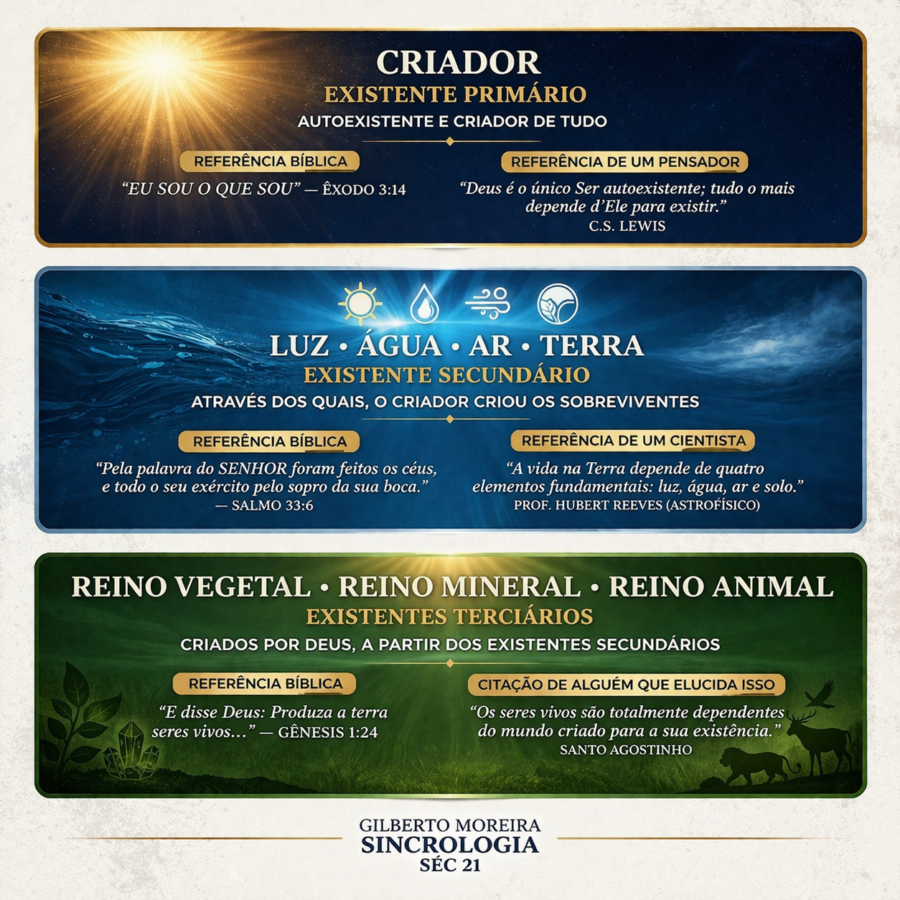

A Ordem do Existir
A Ontologia Hebraica na Sincrologia estabelece que a paz emocional depende do reconhecimento da nossa posição na hierarquia da criação. O formando deve compreender que não possui vida própria, mas "está" vivo por concessão.

Identificar o Existente Primário (O Criador), o Secundário (As Leis) e o Terciário (O Homem) é o que permite silenciar a ansiedade de controle e focar na gestão do comportamento real.